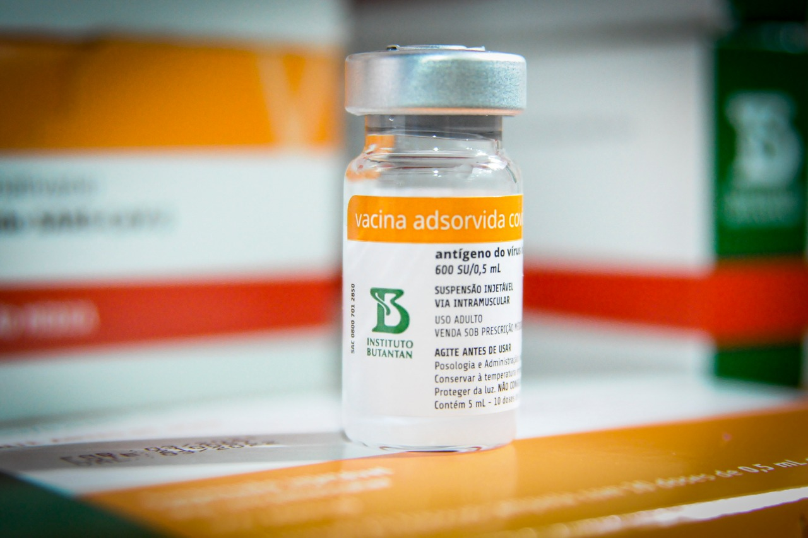
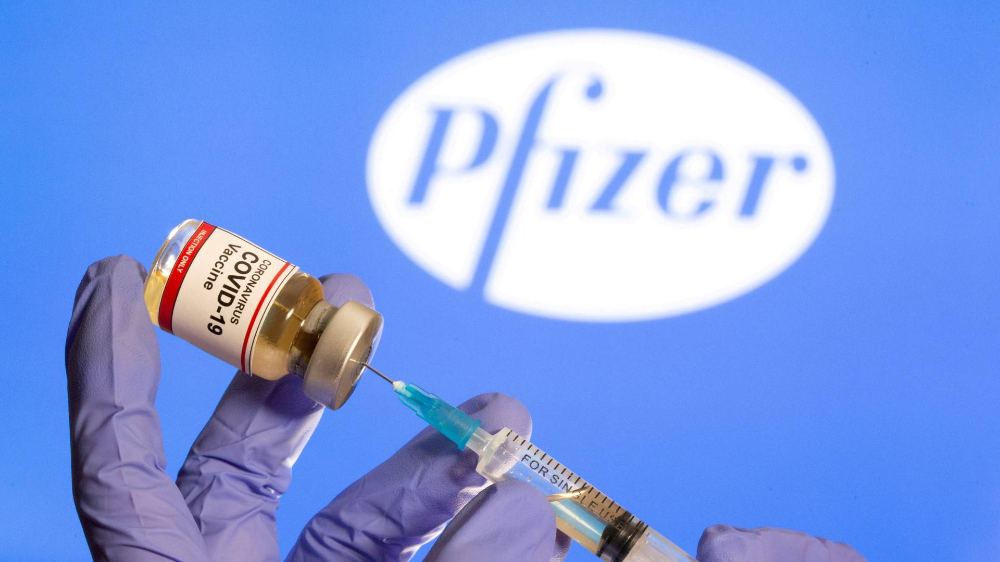
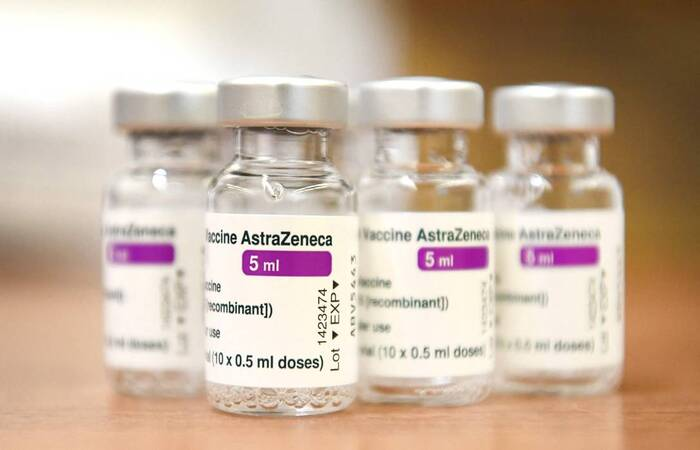
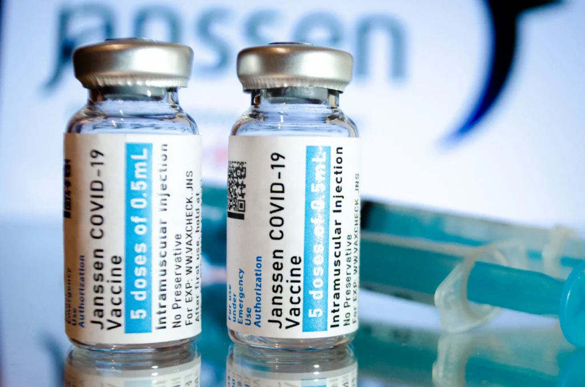
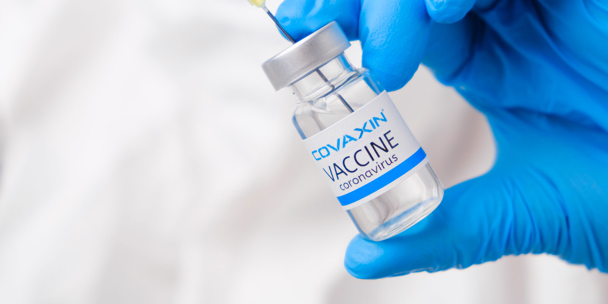

CoronaVac é uma vacina contra a COVID-19 desenvolvida pela companhia biofarmacêutica chinesa Sinovac Biotech. A vacina utiliza uma versão quimicamente inativada do SARS-CoV-2, o tipo de coronavírus que causa COVID-19.
Coronavac
Pfizer
A vacina da Pfizer e da BioNTech contra a COVID-19 é baseada no RNA mensageiro, ou mRNA, que ajuda o organismo a gerar a imunidade contra o coronavírus, especificamente o vírus SARS-CoV-2. A ideia é que o mRNA sintético dê as instruções ao organismo para a produção de proteínas encontradas na superfície do vírus.
AstraZeneca
Janssen
O imunizante, conhecido tecnicamente como Ad26.COV2.S dpopularmente conhecida como "Vacina Janssen", utiliza a tecnologia de vetor viral, um vírus enfraquecido que transporta os genes virais para dentro das células, estimulando a resposta imunológica. A mesma metodologia, considerada de 3ª geração, é utilizada nos imunizantes Oxford/AstraZeneca e Sputnik V.
Covaxin
Ela foi uma das primeiras a ser usadas no mundo na vacinação emergencial e será uma das vacinas aplicadas pelo Brasil, onde será produzida em parceria com a Precisa Medicamentos, e o Ministério da Saúde estima usá-la em fevereiro de 2021. No dia 05 de fevereiro de 2021, a Agência Nacional de Vigilância Sanitária (Anvisa) anunciou que havia recebido um pedido de estudo da vacina no Brasil.